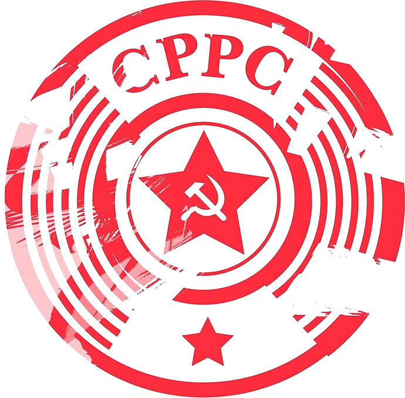
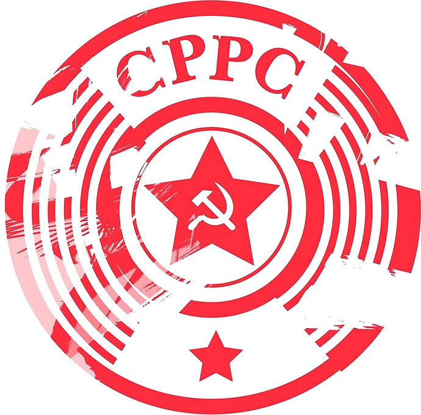

A Scanner DRAClyA PenTest Story
Vlad Grigorescu
2021-06-10

A PenTest Story
Vlad Grigorescu
2021-06-10

About Me
- Security Engineer @ UIUC, CMU, NCSA, ESnet
- Core Zeek Developer
- Consultant, focused on PenTesting
- A few CVEs, a few CTF wins
What this Talk Is
- The story of a PenTest
- What defenses were in place
- How they failed (and why it matters)
- How they can be improved
- How you can build up red-team expertise
What this Talk is NOT
- A vendor pitch
- A reflection of anyone else's views
- Revolutionary
PenTest Overview: Mission
- Collaboration with a hospital on medical research
- Scope was expanded with the school's COVID response
- Can an attacker access PHI?
Step 1: Work with the CSO to determine scope
- Everything*
- No physical access to the PHI servers
- Any blowback better be worth it
Logistics
- Client provided list of subnets and access to some Slack channels
- I told the CSO when the test began and ended
- External test: No access provided
- Internal test: Virtual machine with no special access provided
Open-Source Intelligence
- Reverse DNS (
nmap -sL) - Certificate Transparency Logs
OSINT: EDU
- InCommon Federation
eduroam

OSINT: EDU
Mailing lists
We monitor two full /16, 3 /24, and 2 partial /16, in front of any local FW devices.
…
I switched to the bro-simple-scan package.
Scanning
bro-simple-scan

bro-simple-scan
event connection_attempt(c: connection) { - if ( c$history == "S" ) + if ( c$history == "S" || c$history == "SW") add_scan(c$id); }
masscan
static unsigned char default_tcp_template[] = // ... - "\x04\x0" /* window fixed to 1024 */ + "\x00\x0" /* 0-sized window */
Update Zeek Packages
Zeek ssh/main.zeek
event ssh_auth_attempted(c: connection, authenticated: bool) { # ... # We can't accurately tell for compressed streams if ( c$ssh?$compression_alg && \ ( c$ssh$compression_alg in compression_algorithms ) ) return;
Scanning Demo
Next Steps
- Look at TLS certificates
- Identify:
- applications,
- versions,
- vulnerabilities
CVE-2018-1207


Trash
#####+REVEALINITSCRIPT: parallaxBackgroundImage: "./background.jpg", parallaxBackgroundSize: "6211px 1686px"